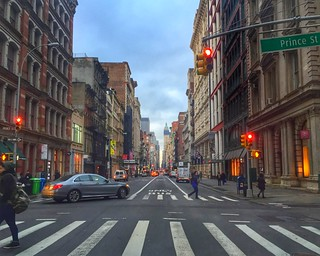
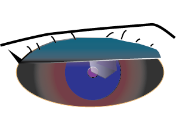

After Image
After Image 
Before Image After Image

I choose to use this city road because of the wide shot. It allows me to showcase the foreground contrasts against the background using the different using city blocks. I transformed the city block by using pen tool to then create geometric shapes using various colors.